Carbohydrates
- Essentials
- Intro & roles
- Classification
- Monosaccharides
- Stereoisomerism
- Cyclic forms
- Physical properties
- Chemical properties
- Derivatives
- Oligosaccharides
- Polysaccharides
- Heterosides
- Exam traps
- Self-check
- Monosaccharides: (CH₂O)ₙ = CₙH₂ₙOₙ, n = 3–7; aldoses (aldehyde) or ketoses (ketone); water-soluble, sweet, not hydrolysable. Glucose = aldohexose, fructose = ketohexose.
- D or L = side of the OH on the C* farthest from the carbonyl (C5 for glucose): right = D. Humans use D-sugars. D/L has nothing to do with (+)/(−): D-glucose is (+), D-fructose is (−).
- Enantiomers = mirror images (D- vs L-glucose). Epimers = differ at one C (not anomeric): glucose/galactose C4, glucose/mannose C2. Anomers = α/β, differ only at the anomeric C (C1 aldoses, C2 ketoses). Diastereomers = not mirror images.
- Cyclization is intramolecular, reversible, gives a hemiacetal (aldose) / hemiketal (ketose) and a new C* (anomeric). Pyranose C1–C5 (aldose), furanose C2–C5 (ketose).
- Mild oxidation → aldonic acid; strong → aldaric acid (both ends); terminal CH₂OH only → uronic acid. Reduction: glucose → sorbitol, fructose → sorbitol + mannitol.
- Disaccharides: reducing = maltose, cellobiose, lactose; non-reducing = sucrose, trehalose. Lactose = β-D-galactopyranosyl (1→4) D-glucopyranose; trehalose = glucose α(1→1) glucose.
- Starch = amylose + amylopectin; glycogen = like amylopectin but more branched (α1→4 + α1→6); cellulose = linear β(1→4), not digestible by humans.
I–II. Introduction and biological roles p. 3–5
| Role | Key facts |
|---|---|
| Energy | Glucose = main fuel, especially brain and red blood cells. 1 g = ~4 kcal. |
| Storage | Glycogen in animals (liver, muscles), starch in plants — mobilized fast in fasting/effort. |
| Structure | Cellulose (plant walls, linear β-D-glucose); GAGs (hyaluronic acid, chondroitin sulfate) in extracellular matrix; chitin (N-acetylglucosamine) in insect/crustacean exoskeleton. |
| Nucleic acids | Ribose (RNA) and deoxyribose (DNA), both pentoses. |
| Recognition | Glycoproteins and glycolipids on the outer membrane surface; ABO blood groups are carbohydrate structures. |
| Protection, lubrication | Mucopolysaccharides (GAGs) in mucus and synovial fluid. |
III. Classification p. 6 2022-23 · 2025-26
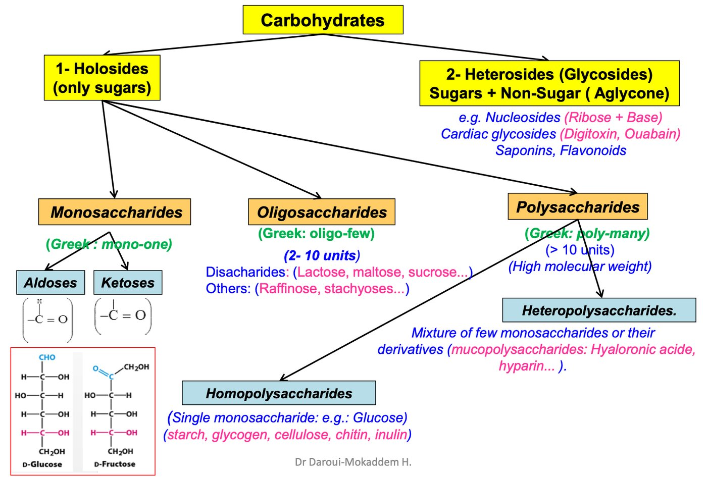
IV. Monosaccharides p. 8–10 2022-23 · 2025-26
- Simplest carbohydrates: one polyhydroxy aldehyde or ketone unit; building blocks of all others.
- Colourless, crystalline, water-soluble, sweet; cannot be hydrolysed.
- Formula (CH₂O)ₙ, n = 3–7. CH₂OH = primary alcohol, CHOH = secondary alcohol.
| Carbons | Formula | Aldose | Ketose |
|---|---|---|---|
| Triose (3) | C₃H₆O₃ | Glyceraldehyde | Dihydroxyacetone |
| Tetrose (4) | C₄H₈O₄ | Erythrose | Erythrulose |
| Pentose (5) | C₅H₁₀O₅ | Ribose | Ribulose |
| Hexose (6) | C₆H₁₂O₆ | Glucose | Fructose |
| Heptose (7) | C₇H₁₄O₇ | Glucoheptose | Sedoheptulose |
Fischer projection: the most oxidized group (aldehyde/ketone) at the top; 2D view where you read each OH as left or right.
Stereoisomerism — chirality p. 11–19 2022-23 · 2023-24 · 2024-25 · 2025-26
- Stereoisomers: same structural formula, different spatial configuration.
- Asymmetric carbon (C*): bonded to 4 different atoms/groups.
- Glyceraldehyde (glycerose) is the reference sugar: D and L forms. Dihydroxyacetone is achiral — no C*.
- D/L: OH on the C* next to the terminal CH₂OH (C5 in glucose) on the right = D, left = L. Most sugars in humans are D; cell enzymes metabolize the D-series.
- Number of isomers N = 2ⁿ (n = number of C*). D-erythrose: 2 C* → 4 isomers (2 D, 2 L).
| Type | Definition | Example |
|---|---|---|
| Enantiomers (optical isomers) | Mirror images; equal and opposite rotation | D-glucose / L-glucose; D-fructose / L-fructose |
| Epimers | Differ at one specific carbon, not the anomeric one; interconverted by epimerases | Glucose/galactose = C4; glucose/mannose = C2 |
| Diastereomers | Stereoisomers that are not mirror images | Mannose / galactose |
| Anomers | Differ only at the anomeric carbon (cyclic forms) | α- / β-D-glucopyranose (C1); α- / β-D-fructofuranose (C2) |
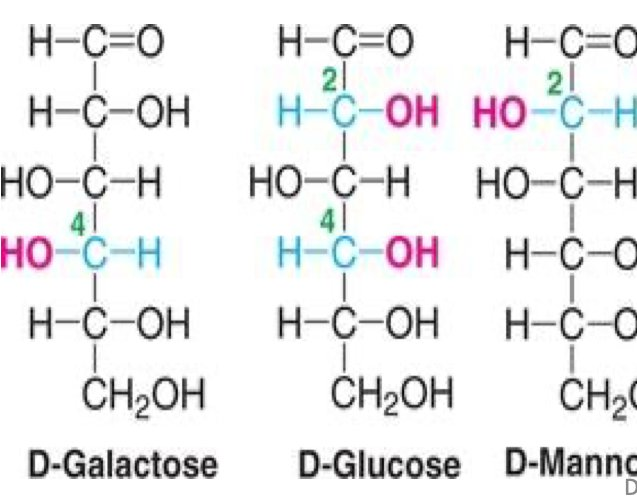
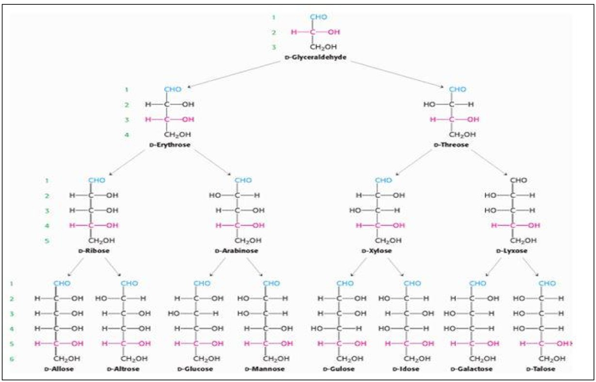
- Of the 8 aldohexoses, glucose, mannose, galactose are the familiar ones; D-glucose is the only aldose that predominantly occurs in nature.
- 5 physiologically important ketoses: dihydroxyacetone (3C), D-xylulose (5C), D-ribulose (5C), D-fructose (6C), D-sedoheptulose (7C).
Cyclic representation p. 20–27 2025-26
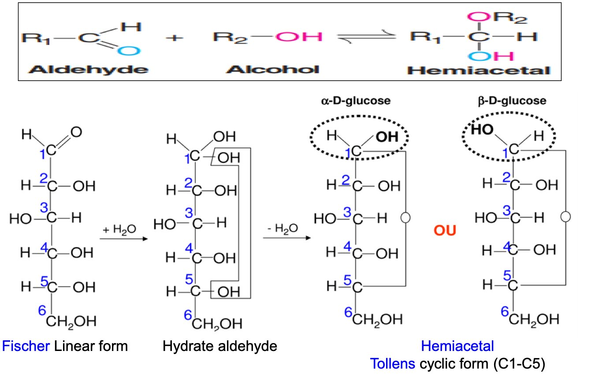
| Ring | Aldoses | Ketoses |
|---|---|---|
| Pyranose (6-membered, pyran) | C1–C5 | C2–C6 |
| Furanose (5-membered, furan) | C1–C4 | C2–C5 |
Anomeric carbon: C1 in aldoses = hemiacetal carbon; C2 in ketoses = hemiketal carbon.
Typical forms: β-D-glucopyranose, β-D-fructofuranose. The chair form of glucose is the most stable conformation (vs boat).
Haworth rules p. 22
- Ring oxygen in the upper right: α = OH on C1 down, β = OH on C1 up.
- D-sugars: the free CH₂OH is above the ring.
- Groups on the left in Fischer go up; on the right go down.
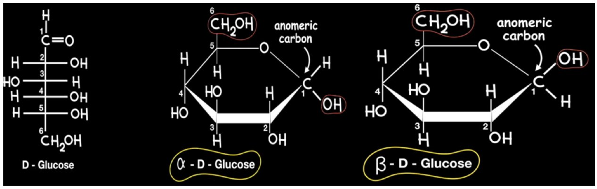
Monosaccharides of biological interest p. 26–27
| Sugar | Key facts |
|---|---|
| D-Glucose | Main energy source of mammals (except ruminants); glycemia ≈ 0.80 g/L; imbalance → diabetes. |
| D-Galactose | Turned into glucose in the liver; in lactose (milk), oligosaccharides, glycolipids. |
| D-Mannose | In several glycoproteins. |
| D-Fructose | Fruits, honey, seminal fluid (energy for spermatozoa); metabolized in the liver; only partially used in humans. |
| D-Ribose | β-D-ribose / β-D-2-deoxyribose in RNA/DNA, linked to bases by N-glycosidic bonds. |
| D-Arabinose | Arabic gum, prune gum, cereals; precursor of D-ribose and D-mannose; not metabolized, excreted in urine. |
| L-Arabinose | One of the rare natural L-sugars; plants; not metabolized, excreted in urine harmlessly. |
Physical properties p. 29–34 2022-23 · 2023-24 · 2025-26
- Solubility: very soluble in water, little or not in organic solvents; fructose more soluble than glucose.
- Optical activity comes from C*. Measured with a polarimeter at 20 °C, sodium D-line 589 nm.
- Biot's law: [α]D20 = α / (c × l) — α observed angle (°), c in g/mL, l in dm.
- Dextrorotatory (+) = turns light to the right; levorotatory (−) = to the left. "Dextrose" = glucose in solution.
- Optically active if: ≥ 1 C* AND no plane of symmetry. Tartaric acid: 2 C* but a plane of symmetry → inactive.
- Enantiomers: same magnitude, opposite sign. D-glucose +52°, L-glucose −52°; D-fructose −92.2°, L-fructose +92.2°.
- Racemic mixture = equal D + L → optically inactive. Rotations in a solution are additive.
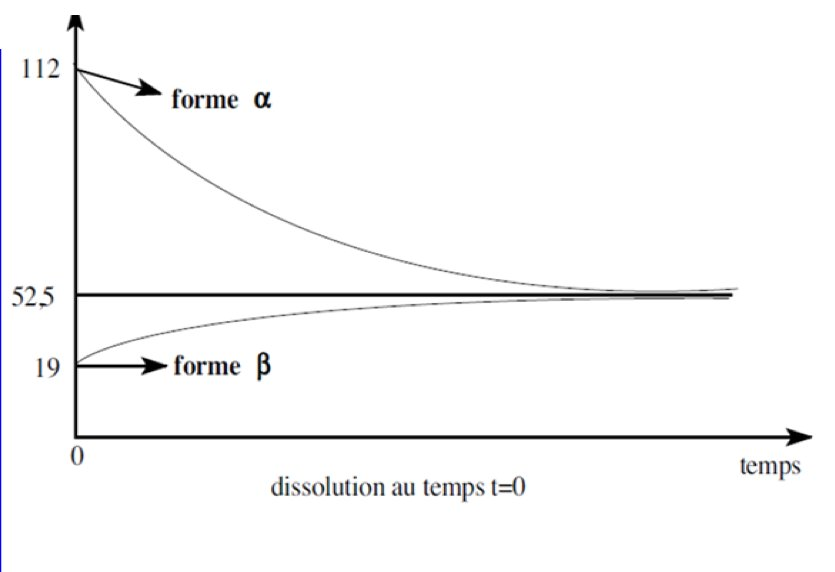
- α-D-glucose: +111° (curve: 112)
- β-D-glucose: +19.2°
- Equilibrium in water: +52.5°
- At equilibrium: β-pyranose 64%, α-pyranose 36%, open chain 0.02%
Chemical properties p. 36–47 2022-23 · 2023-24 · 2025-26
Due to the OH groups and the carbonyl. 6 reactions: oxidation, reduction, enolization, dehydration, esterification, methylation.
a) Oxidation
| Type | What is oxidized | Product | Notes |
|---|---|---|---|
| Mild (HOBr) | Aldehyde (C1) → COOH | Aldonic acid (glucose → gluconic acid) | Ketoses don't react |
| Strong (HNO₃) | Aldehyde and primary alcohol | Aldaric acid (glucose → glucaric acid) | Galactose → mucic acid: insoluble crystals, optically inactive (plane of symmetry) |
| Specific enzyme | Only the terminal CH₂OH | Uronic acid (glucuronic acid) | Liver detoxification (glucuronides of bilirubin, hormones, drugs); part of GAGs |
| Metal salts (Fehling) | Aldehyde, hot alkaline medium | Aldonic acid + red Cu₂O | Cu²⁺ (cupric) reduced → the sugar is reducing |
b) Reduction
Sodium amalgam reduces the aldehyde/ketone to an alcohol (polyol).
| Sugar | Alcohol |
|---|---|
| D-Glucose | D-Sorbitol |
| D-Galactose | D-Dulcitol |
| D-Mannose | D-Mannitol |
| D-Fructose | D-Mannitol + D-Sorbitol |
| D-Ribose | D-Ribitol |
| D-Glyceraldehyde | D-Glycerol |
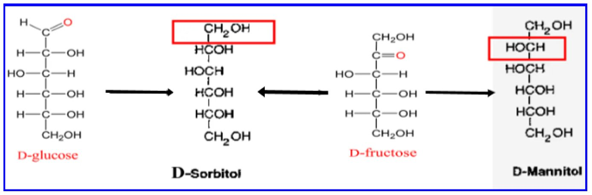
c–f) Other reactions
| Reaction | Key facts |
|---|---|
| Enolization (tautomerization) | Dilute alkali → 1,2-enediol; glucose, fructose, mannose interconvert. |
| Dehydration (conc. acid, −3 H₂O) | Pentoses → furfural (Bial's/orcinol test: xylose in urine, essential pentosuria); hexoses → 5-hydroxymethylfurfural (HMF), marker of Maillard reactions. |
| Esterification | With phosphoric acid: glucose 6-phosphate, glucose 1-phosphate; ATP donates the phosphate. |
| Methylation | Anomeric OH blocked (CH₃OH) → non-reducing. Complete methylation (ICH₃/Ag₂O) is used to find the positions of glycosidic bonds and to protect OH groups. |
Derivatives of monosaccharides p. 48–49
| Family | Members and facts |
|---|---|
| Deoxy sugars | 2-deoxyribose (DNA, CH₂ at C2, furanose); L-fucose = 6-deoxy-L-galactose (blood group antigens); L-rhamnose = 6-deoxy-L-mannose (hemicelluloses). |
| Amino sugars (osamines) | OH at C2 → NH₂, often acetylated: glucosamine, galactosamine, mannosamine (N-acetyl…). In chitin, murein, glycoproteins; some antibiotics (erythromycin). |
| Uronic acids | Glucuronic, galacturonic acid; in GAGs; hepatic detoxification. |
| Vitamin C (L-ascorbic acid) | Only L is active; ene-diol function; humans can't make it; deficiency → scurvy. |
| Sialic acid (NANA, 9 C) | = pyruvic acid (3C) + D-mannosamine (6C); negative charge on glycolipids/glycoproteins. |
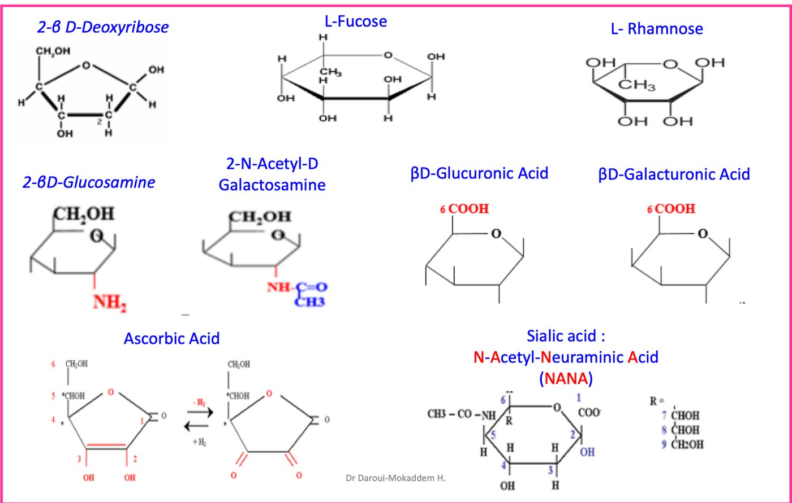
V. Oligosaccharides p. 51–54 2022-23 · 2024-25
- Glycosidic bond named by the carbons linked and the α/β state of the anomeric carbon: lactose = C1 of β-galactose + C4 of glucose = β(1→4).
- Disaccharides: crystalline, water-soluble, sweet. Reducing = a free anomeric carbon (maltose, cellobiose, lactose); non-reducing = none (sucrose, trehalose).
| Sugar | Systematic name | Reducing? | Facts |
|---|---|---|---|
| Maltose | α-D-glucopyranosyl (1→4) D-glucopyranose | Yes | From digestion of starch/glycogen; α-glucosidase |
| Cellobiose | β-D-glucopyranosyl (1→4) D-glucopyranose | Yes | From cellulose; like maltose but β(1→4) |
| Lactose | β-D-galactopyranosyl (1→4) D-glucopyranose | Yes | Only in milk: 10–80 g/L (human ~75, cow ~48 g/L); mildly sweet |
| Sucrose | α-D-glucopyranosyl (1→2) β-D-fructofuranoside | No | Cane/beet; +66.5° → hydrolysis products −28.2° = inversion; invertase |
| Trehalose | α-D-glucopyranosyl (1→1) α-D-glucopyranoside | No | 40–45% of sucrose's sweetness; fungi, bacteria (cold, drying); cosmetics |
| Raffinose (trisaccharide) | α-D-galactopyranosyl (1→6) glucopyranosyl (1→2) β-D-fructoside | — | Most common triholoside after sucrose; sugar beet |
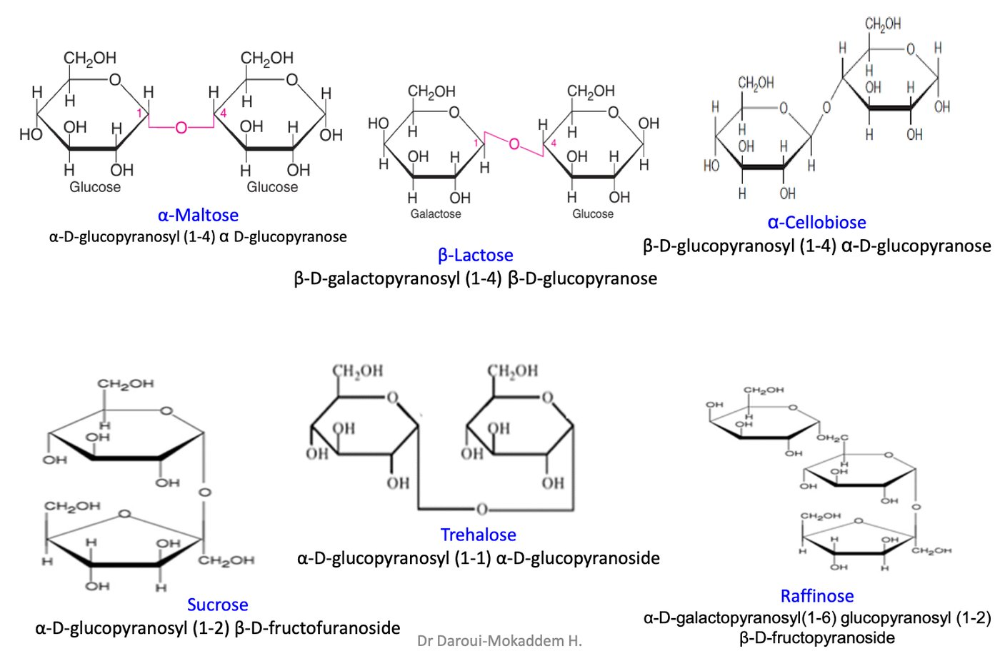
VI. Polysaccharides p. 56–61 2022-23 · 2025-26
- Homopolysaccharides: one kind of ose (glucans = glucose, fructosans = fructose). Heteropolysaccharides: a few oses or derivatives.
- Not truly soluble (high molecular weight) → colloidal solutions.
| Unit | Bonds | Shape | Facts | |
|---|---|---|---|---|
| Starch | D-glucose | α | Amylose (15–20%, soluble) + amylopectin (80–85%, insoluble, branched) | Plant reserve; main dietary source; digested by amylases |
| Glycogen | D-glucose | α(1→4) + α(1→6) at branches | Like amylopectin, more branched | "Animal starch": liver, muscle; core protein glycogenin (GYG1) |
| Cellulose | β-D-glucose | β(1→4) | Linear | Plants only, most abundant; not digested by humans (no enzyme for β bonds); ruminant microbes → cellobiose → glucose; dietary fibre |
| Chitin | N-acetyl-D-glucosamine | β(1→4) | Structural | Exoskeleton of insects, crustaceans; → chitosan by deacetylation |
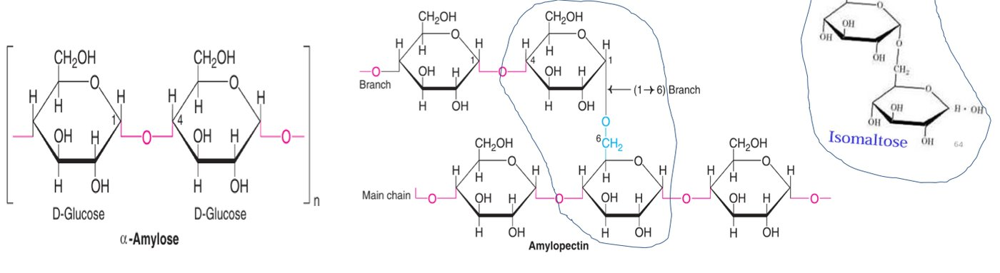
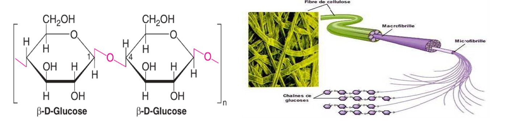
Heteropolysaccharides: plant gums (galactose + arabinose + rhamnose + glucuronate)ₙ; agar-agar (red algae, culture media); capsular polysaccharides of pneumococci/streptococci (antigenic specificity, pathogenicity).
VII. Heterosides (glycosides) p. 62–69 2022-23
Sugar + non-sugar aglycone. Classified by the atom linking them:
| Class | Link | Examples |
|---|---|---|
| O-heterosides | Oxygen | Amygdalin (bitter almonds, cyanogenic → HCN), digitalin (Digitalis purpurea, cardiotonic, steroid aglycone), sennoside (laxative), rutin (flavonoid, vasoprotective) |
| N-heterosides | Nitrogen (of a base) | Nucleosides (e.g. adenosine) |
| S-heterosides | Thiol | Sinigrin (black mustard) |
- Peptidoglycans: polysaccharide + short peptides — murein, bacterial wall.
- Glycated proteins: glucose bound to hemoglobin in hyperglycemia → marker of diabetes.
- Glycoproteins: 1–90% sugar. O-linked via serine/threonine OH; N-linked via asparagine amide N.
- Proteoglycans: protein core + GAG chains, sugar > 90%. GAGs are acidic (sulfate + carboxyl). Structural GAGs: hyaluronic acid, chondroitin, dermatan, keratan sulfates; secretory: heparin.
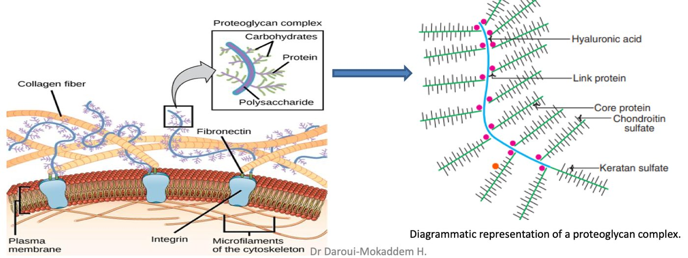
| GAG | Composition | Where | Function |
|---|---|---|---|
| Hyaluronic acid | D-glucuronic acid + N-acetylglucosamine | Connective tissue, synovial fluid, vitreous; gel around the ovum | Lubricant, shock absorber, wound healing (hyaluronidase cuts β1→4 → sperm entry) |
| Chondroitin sulfate | D-glucuronic acid + N-acetylgalactosamine-4-sulfate | Cartilage, bone, skin, vessel walls | Tissue structure and shape |
| Heparin | D-glucuronate-2-sulfate + N-sulfoglucosamine-6-sulfate; α(1→4) | Blood, lungs, liver, kidneys, spleen | Anticoagulant; releases lipoprotein lipase |
| Dermatan sulfate | L-iduronic acid (C5 epimer of glucuronic) + N-acetylgalactosamine-4-sulfate | Skin, vessel and heart valves | Tissue shape |
| Keratan sulfate | D-galactose + N-acetylglucosamine-6-sulfate | Cartilage, cornea, connective tissue | Keeps the cornea transparent |
Exam traps
- "A D-sugar is always dextrorotatory" / "D-glucose and D-fructose both turn light right" — false: D-fructose is (−). 2 years
- "Natural oses are as much L as D" — false: mostly D.
- "Monosaccharides all have ≥ 1 C*" — false: dihydroxyacetone has none (optically inactive ketotriose).
- Formula is CₙH₂ₙOₙ — not CₙH₂ₙ₋₂Oₙ, CₙH₂ₙ₊₂Oₙ or CₙH₂ₙO₂.
- D- / L-glucose = enantiomers, not epimers or anomers; α/β-galactopyranose = anomers (not epimers, not enantiomers). 4 years
- Cyclization is reversible in water (that's why mutarotation exists).
- Mild oxidation → aldonic, strong → aldaric — exams swap them.
- Glucose and fructose have the same number of alcohol functions (5); glucose has (n−2) = 4 C* (official key).
- Kiliani–Fischer on ribose gives aldohexoses that are C2 epimers — not ketohexoses.
- Lactose is β-galactopyranosyl (1→4) glucopyranose — not the other way round, not α.
- Trehalose: no free anomeric carbon, α(1→1) — not β(1→2), not hydrolysed by maltase (key).
- Cellobiose + dilute HNO₃ → one gluconic acid (only the reducing end is oxidized).
- Cellulose is not branched, not α, not a reserve, not digestible.
- Glycogen is not made of amylose + amylopectin (that's starch).
- "All polysaccharides are holosides" was marked false in 2025-26, even though the slide 6 tree puts polysaccharides under holosides — go with the key.